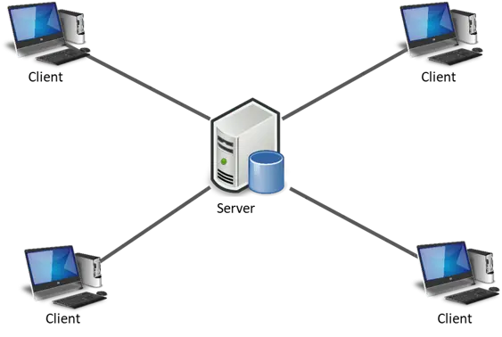

¿Qué es un paradigma de programación?
Un paradigma de programación es una manera o estilo de programación de software. Existen diferentes formas de diseñar un lenguaje de programación y varios modos de trabajar para obtener los resultados que necesitan los programadores. Se trata de un conjunto de métodos sistemáticos aplicables en todos los niveles del diseño de programas para resolver problemas computacionales.
Los lenguajes de programación adoptan uno o varios paradigmas en función del tipo de órdenes que permiten implementar como, por ejemplo, Python, C++ o JavaScript, que son multiparadigmas.
Paradigma imperativo
Los programas consisten en una sucesión de instrucciones o conjunto de sentencias, como si el programador diera órdenes concretas. El desarrollador describe en el código paso por paso todo lo que hará su programa. Algunos lenguajes: Pascal, COBOL, FORTRAN, C, C++, etc.
Otros enfoques subordinados:
Programación estructurada: Es un tipo de programación imperativa donde el flujo de control se define mediante bucles anidados, condicionales y subrutinas, en lugar de a través de GOTO.
Programación procedimental: Consiste en basarse en un número muy bajo de expresiones repetidas, englobarlas todas en un procedimiento o función y llamarlo cada vez que tenga que ejecutarse.
Programación modular: Consiste en dividir un programa en módulos o subprogramas con el fin de hacerlo más manejable y legible. Se trata de una evolución de la programación estructurada para resolver problemas complejos.
Paradigma declarativo
Este paradigma no necesita definir algoritmos puesto que describe el problema en lugar de encontrar una solución al mismo. Utiliza el principio del razonamiento lógico para responder a las preguntas o cuestiones consultadas.
Este paradigma a su vez se divide en dos: Programación Lógica (Prolog) y Programación funcional (Lisp, Scala, Java, Kotlin).
Programación orientada a objetos
En este modelo se construyen modelos de objetos que representan elementos del problema a resolver, que tienen características y funciones. Permite separar los diferentes componentes de un programa, simplificando así su creación, depuración y posteriores mejoras. Disminuye los errores y promociona la reutilización del código. Es una manera especial de programar, que se acerca de alguna manera a cómo expresaríamos las cosas en la vida real.
Podemos definir un objeto como una estructura abstracta que describe un posible objeto del mundo real y su relación con el entorno. Ejemplos: Java, Python o C#.
Programación Funcional
Se basa en el uso de funciones matemáticas. Se evita el cambio de estado y la mutabilidad de los datos, lo que facilita la escritura de código más conciso y fácil de razonar.
Programación Lógica
Los programas están basados en reglas lógicas. Se define qué se quiere obtener y el sistema de programación lógica se encarga de encontrar la solución.
¿Qué es la Arquitectura Cliente-Servidor?
Es uno de los estilos arquitectónicos distribuidos más conocidos, compuesto por el proveedor (servidor) y el consumidor (cliente). El servidor brinda servicios o recursos que son consumidos por el Cliente.
Existe un servidor y múltiples clientes; el cliente solo es una capa para representar los datos, mientras que el servidor es el que hace todo el trabajo pesado.

La comunicación suele ser por TCP/IP, permitiendo una conexión continua y bidireccional. Ambas partes son mutuamente dependientes: el cliente no sirve de nada si el servidor no está disponible, y el servidor no tiene motivo de ser sin clientes.
Tipos de servidores en la arquitectura
Servidores web
Responsables de manejar solicitudes HTTP y entregar contenido a los navegadores. Actúan como intermediarios recibiendo peticiones de URL y respondiendo con datos (HTML, imágenes, videos).
Servidores de bases de datos
Gestionan el almacenamiento, recuperación y manipulación de datos. Permiten acceso concurrente y garantizan la integridad y seguridad de la información sensible.
Servidores de archivos
Diseñados para almacenar y compartir documentos o programas en red. Permiten crear carpetas compartidas y gestionar copias de seguridad.
Análisis de la Arquitectura
Ventajas
- Centralización: Única fuente de la verdad.
- Seguridad: Protección mediante firewalls en el servidor.
- Fácil instalación: El cliente suele ser una app simple.
- Portabilidad: Cada parte puede correr en plataformas distintas.
Desventajas
- Actualizaciones: Difícil gestionar muchos clientes.
- Concurrencia: Saturación ante muchos usuarios.
- Todo o nada: Si cae el servidor, nada funciona.
- Depuración: Difícil rastrear errores en máquinas distribuidas.